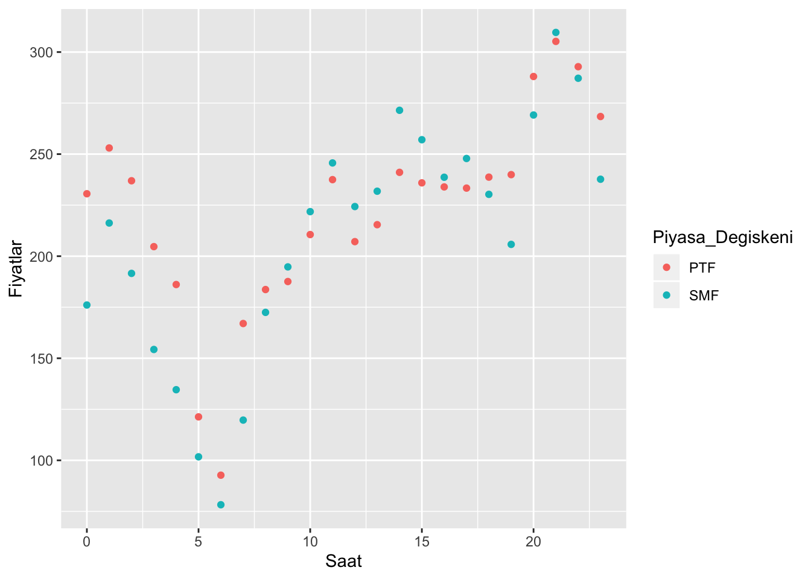
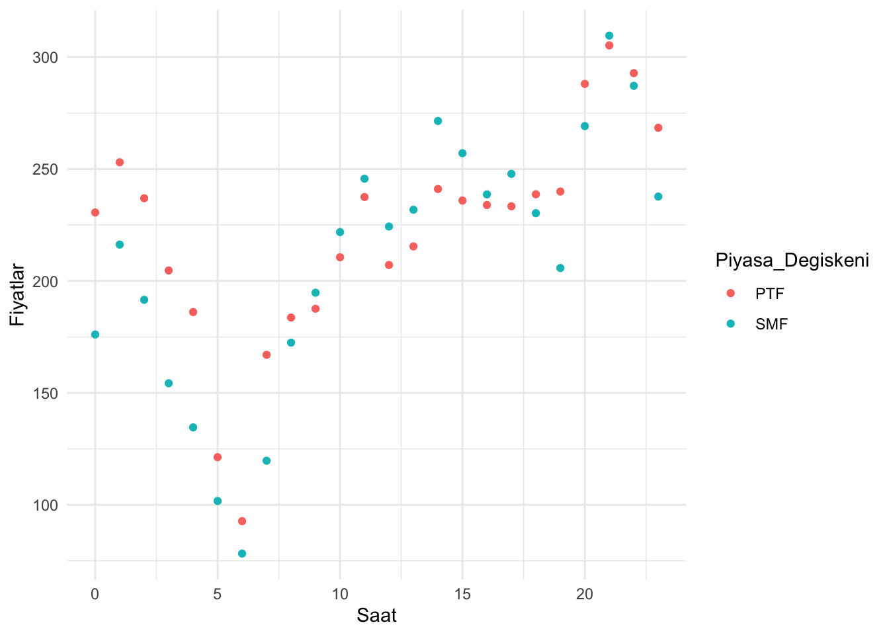
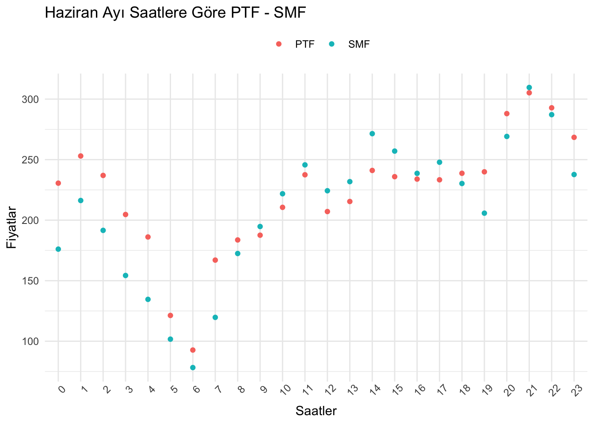
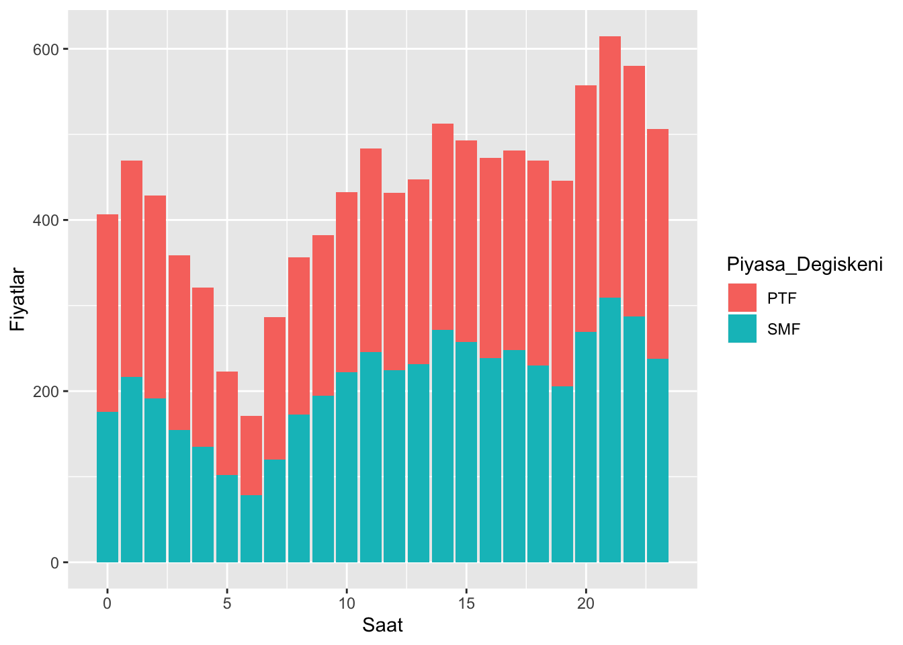
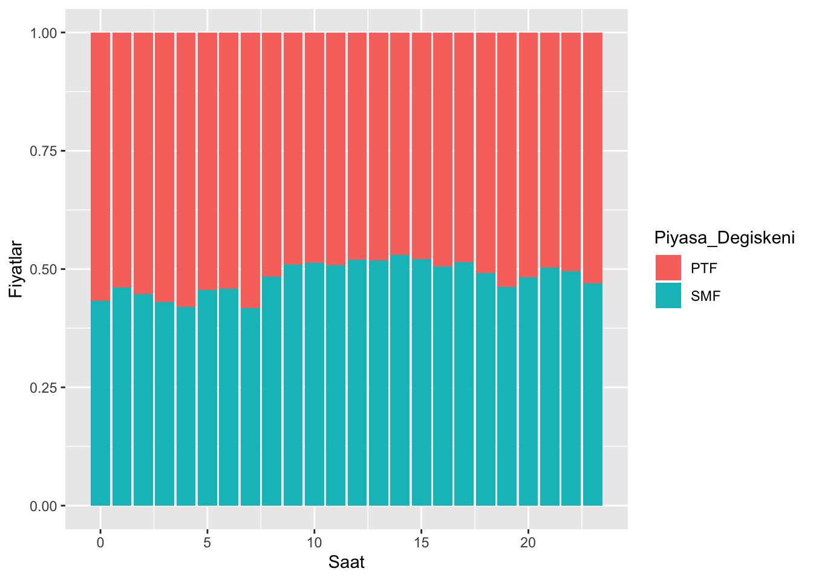
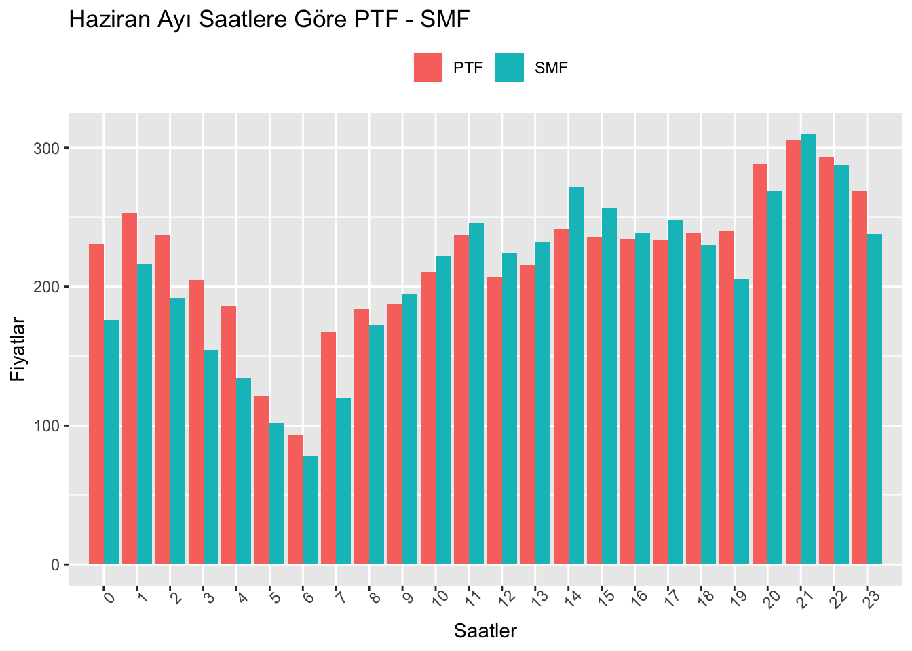
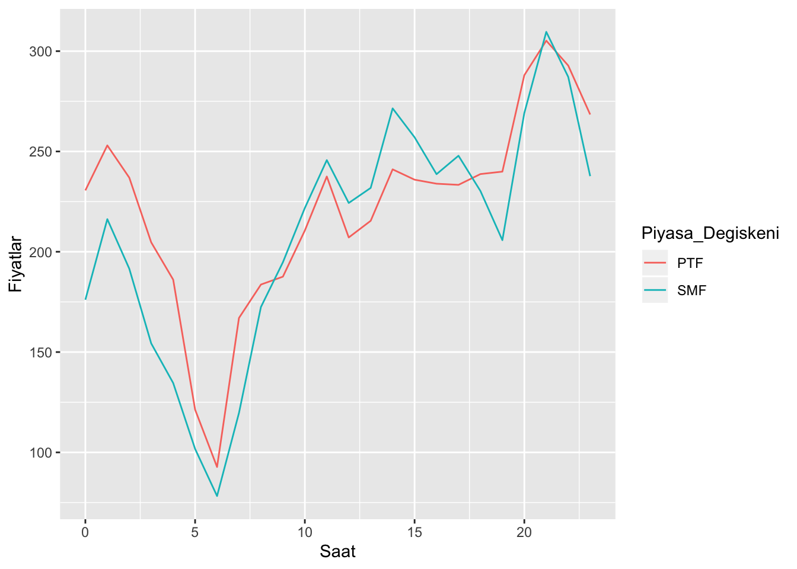
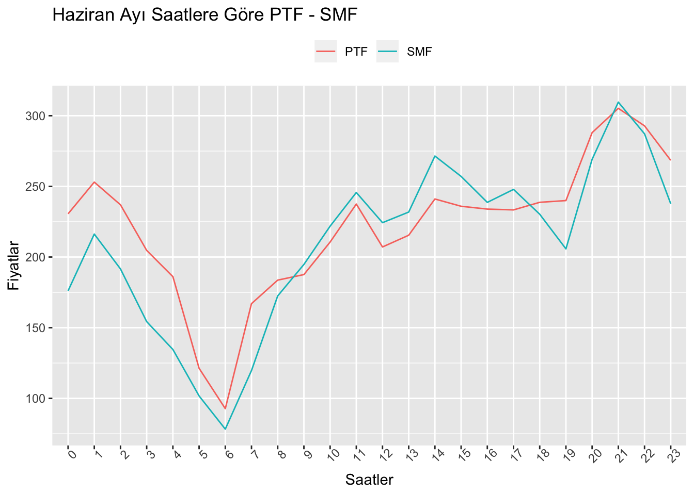

3 ggplot2 ile Veri Görselleştirme
Bu bölümde ggplot2 paketinden yararlanarak veri görselleştirmenin nasıl yapılabileceği farklı fonksiyonlar ve örnekler üzerinden gösterilecektir.
3.1 Hazırlıklar
Bu bölüme başlamadan önce yapılması gereken ggplot2 paketini indirmek ve yüklemek. Paketi indirmek için install.packages("ggplot2") , paketi yüklemek için ise library(ggplot2) komutları kullanılabilir. (Veri setini indirmediyseniz lütfen Veri Seti bölümünü ziyaret ediniz.)
# ggplot2 paketinin indirilmesi
install.packages("ggplot2")
# ggplot2 paketinin yüklenmesi
library(ggplot2)Bu bölümde daha ayrıntılı renklendirmelerin nasıl yapılabileceğinin gösterilebilmesi adına veri seti üzerinde bazı düzenlemeler gerekiyor. Örneğin 2019 Haziran ayı için saatlere göre Piyasa Takas Fiyatı (PTF) ve Sistem Marjinal Fiyatı (SMF) incelenecek olursa (Dönüşüm aşamasında kullanılan pivot_longer fonksiyonu, bu dökümanın kapsamı dışında olduğundan burada açıklanmayacaktır.),
plot_df <- ptfsmf %>% mutate(Saat = hour(Tarih), Tarih = as.Date(Tarih)) %>%
filter(Tarih>"2019-05-31" & Tarih<"2019-07-01") %>%
group_by(Saat) %>%
summarise(PTF = mean(PTF), SMF = mean(SMF)) %>%
ungroup() %>%
pivot_longer(cols=PTF:SMF, names_to="Piyasa_Degiskeni", values_to="Fiyatlar") %>%
glimpse()## Observations: 48
## Variables: 3
## $ Saat <int> 0, 0, 1, 1, 2, 2, 3, 3, 4, 4, 5, 5, 6, 6, 7, 7, 8, 8…
## $ Piyasa_Degiskeni <chr> "PTF", "SMF", "PTF", "SMF", "PTF", "SMF", "PTF", "SM…
## $ Fiyatlar <dbl> 230.58533, 176.08567, 253.01567, 216.25033, 236.9520…Bu dönüşümleri uygulamadan bu bölümde kullanılacak olan veri setine erişmek isterseniz aşağıda gördüğünüz kodu çalıştırabilirsiniz.
dplyr paketinde birden fazla fonksiyonu aynı veri setine uygulamak için “Bağlantı Operatörü” (%>%) kullanılırken ggplot2 paketinde ise birden fazla etkiyi aynı ayna uygulamak için (+) operatörü kullanılıyor. Bu durum başlangıç grafiğinin üzerine farklı görseller eklenmesi olarak düşünülebilir.
3.2 Saçılım Grafiği (Scatter Plot)
İlk olarak bahsedilecek grafik türü olan “Scatter Plot” temel olarak var olan verinin noktasal dağılımını göstermek için kullanılır. Burada ggplot fonksiyonu ile de ilk kez karşılaşıldığından bazı özelliklerinden bahsedilmelidir. Fonksiyonun içine ilk yazılan parametre kullanılacak verinin ismidir. Daha sonra aes() yardımıyla grafiğin x ve y koordinatları belirlenir. aes() içerisinde ayrıca color, fill, alpha, shape, size gibi özellikler de belirlenebilir.
“Scatter Plot” için kullanılan fonksiyon ise geom_point()tir. İlk grafik şu şekilde ortaya çıkacaktır.

Görülebileceği üzere öncelikle veri seti, sonrasında ise aes() içerisinde x ve koordinatları ile renk belirlendi.
Grafiği görsel olarak daha güzel hale getirmek için öncelikle arka plandaki gri kısım theme_minimal() fonksiyonu yardımıyla kaldırılabilir.

Grafiğin ve eksenlerinin ismini değiştirmek, eksenlerdeki numaralandırma sıklığını ayarlamak, x eksenindeki yazıları döndürmek ve lejantı istenilen şekilde konumlamak için aşağıdakiler uygulanmalıdır.
sc_plot <- sc_plot +
labs(title = "Haziran Ayı Saatlere Göre PTF - SMF",
x = "Saatler",
y = "Fiyatlar") +
scale_x_discrete(limits=c(0:23)) +
theme(axis.text.x = element_text(angle = 45), legend.position = "top",
legend.title = element_blank())
sc_plot
3.3 Sütunlu Grafik (Bar Chart)
“Bar Chart”ta ise veriler sütunlarda gösterilir. “Scatter Plot”taki geom_point() yerine geom_bar() fonksiyonu, aes() içerisinde color yerine ise fill kullanılır. (Burada geom_bar içerisinde stat="identity" yazılması zorunludur.) İlk grafik şu şekilde ortaya çıkacaktır.
bar_plot <- ggplot(plot_df, aes(x=Saat, y=Fiyatlar, fill=Piyasa_Degiskeni)) +
geom_bar(stat="identity")
bar_plot
Bu grafiği yüzdesel oranlarına göre tam olarak sığdırmak için ise,
bar_plot <- ggplot(plot_df, aes(x=Saat, y=Fiyatlar, fill=Piyasa_Degiskeni)) +
geom_bar(stat="identity", position="fill")
bar_plot
Son olarak da daha aşina olunduğu üzere sütunları yan yana yerleştirmek için (yukarıda yapılan güzelleştirme operasyonları da uygulanırsa),
bar_plot <- ggplot(plot_df, aes(x=Saat, y=Fiyatlar, fill=Piyasa_Degiskeni)) +
geom_bar(stat="identity", position="dodge") +
labs(title = "Haziran Ayı Saatlere Göre PTF - SMF",
x = "Saatler",
y = "Fiyatlar") +
scale_x_discrete(limits=c(0:23)) +
theme(axis.text.x = element_text(angle = 45), legend.position = "top",
legend.title = element_blank())
bar_plot
Son iki grafikte dikkat edilmesi gereken nokta sütunları dikeyde oranları göz önüne alınarak sığdırmak için position="fill", yan yana yerleştirmek için ise position="dodge" kullanılır.
3.4 Çizgi Grafiği (Line Chart)
“Line Chart”larda ise tahmin edilebileceği üzere geom_line() kullanılacaktır.

Yine daha güzel görünümlü bir grafik elde etmek için gerekli fonksiyonlar da yazılırsa,
ln_plot <- ln_plot +
labs(title = "Haziran Ayı Saatlere Göre PTF - SMF",
x = "Saatler",
y = "Fiyatlar") +
scale_x_discrete(limits=c(0:23)) +
theme(axis.text.x = element_text(angle = 45), legend.position = "top",
legend.title = element_blank())
ln_plot